勤怠RECO運用ルールの設定
勤怠RECO全体に共通で使用するマスタデータを設定します。設定は「共通マスタ」画面で実施します。
ご注意 |
|
|---|
-
［マスタ］をクリックし、［共通マスタ］をクリックする
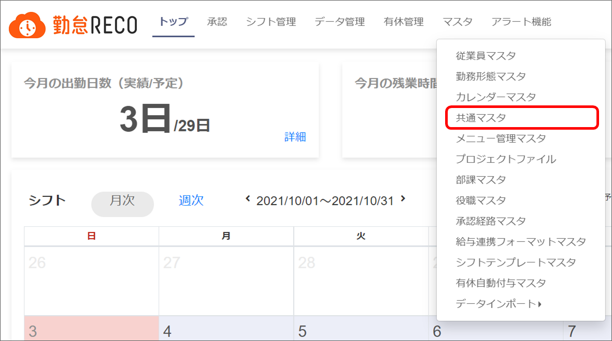
「共通マスタ」画面が表示されます。
-
設定項目を入力する
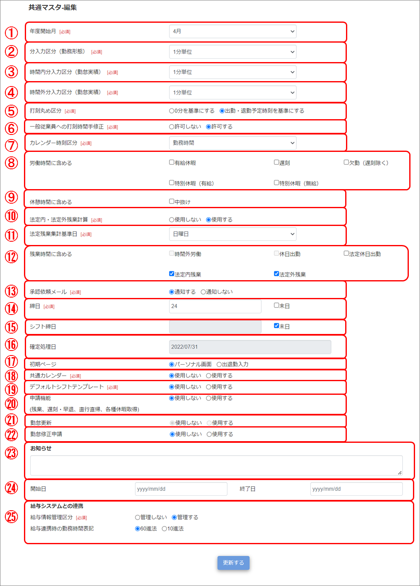
-
年度開始月
年度開始月を設定します。
-
分入力区分（勤務形態）
勤務形態マスタで設定する「出勤時刻」「退勤時刻」「開始時刻」「終了時刻」の時間入力単位を設定します。
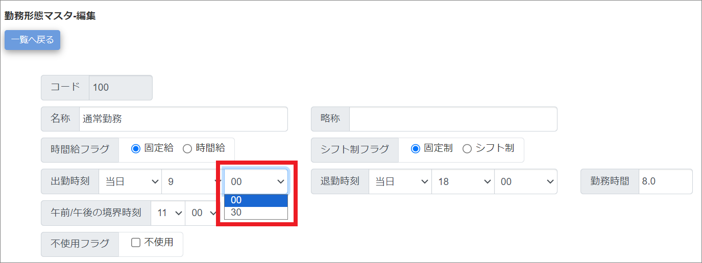
-
時間内分入力区分（勤怠実績）
時間内労働において、打刻時間を何分単位で丸めて勤務時間に反映するかを設定します。この設定は、「勤務時間」「休暇区分」の分入力選択肢の単位にも反映されます。
【例】 15分単位の場合
出勤打刻 8:47 → 9:00出勤となります。
退勤打刻 17:14 → 17:00退社となります。
外出打刻 9:25、戻り打刻 9:35（差分10分）→中抜け時間15分となります。
分入力選択肢 15分単位で表示されます。
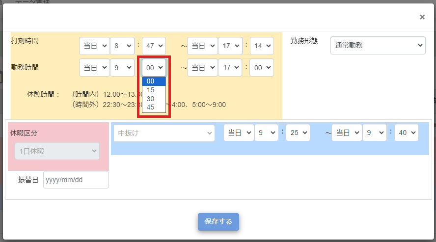
ご注意
中抜け時間がまるめられた場合、戻り時間は「外出打刻時間」に「まるめ後の中抜け時間」を足した時間となります。実際の戻り打刻時間とは異なりますのでご注意ください。
-
時間外分入力区分（勤怠実績）
時間外労働において、打刻時間を何分単位で丸めて勤務時間に反映するかを設定します。この設定は、「勤務時間」「休暇区分」の分入力選択肢の単位にも反映されます。
ヒント
・勤怠更新を使用しない場合は、勤務時間外の打刻すべてが丸め対象になります。
・勤怠更新を使用する場合は、勤務時間外かつ残業申請時間内の打刻が丸め対象になります。
【例】9:00～17:00の勤務形態で、残業申請をした場合
20：00残業申請、19：10退勤打刻→19：00勤務終了
18：00残業申請、19：10退勤打刻→18：00勤務終了（残業申請時間を超過した分は切り捨てられる）
-
打刻丸め区分
時間内分入力区分、時間外分入力区分で丸め設定を行った場合、どの時間を基準に丸めを行うかを設定します。
【例】 「9:10～17:40の勤務形態」を使用し、15分単位で丸めた場合
0分を基準にする
出勤打刻9:09 → 9:15、退勤打刻17:41 → 17:30となります。
出勤・退勤予定時刻を基準にする
出勤打刻9:09 → 9:10、退勤打刻17:41 → 17:40となります。
「勤務時間（勤怠修正の黄色エリア）」
時間内分入力区分、時間外分入力区分で間隔が狭い方の単位
「休暇区分（勤怠修正の青色エリア）」
打刻丸め区分が「0分を基準にする」場合は、時間内分入力区分、時間外分入力区分で間隔が狭い方の単位（中抜けは1分単位）
打刻丸め区分が「出勤・退勤予定時刻を基準にする」場合は、1分単位
-
一般従業員への打刻時間手修正
一般従業員へ、打刻時間の手修正を許可するかを設定します。
※「許可しない」を選択した場合、個人用メニューの勤怠修正画面において、出退勤「打刻時間」が手修正できなくなります。「勤務時間」はこの設定に影響されません。
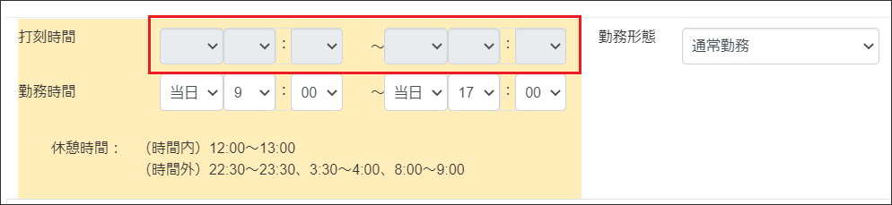
-
カレンダー時刻区分
個人用トップ画面、勤怠実績画面に表示する時刻を選択します。
※「打刻時間＋勤務時間」を選択した場合、勤怠実績画面では打刻時間が優先して表示されます。
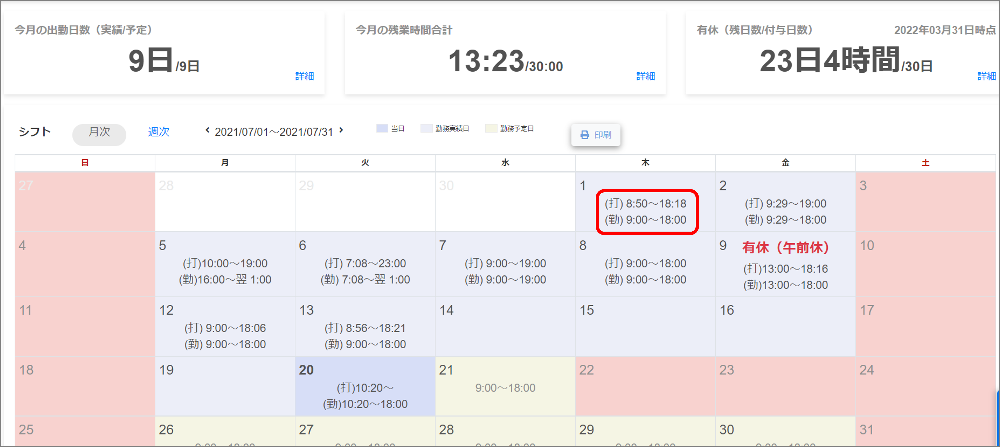
-
労働時間に含める
休暇や欠勤を労働時間に含めるかどうかを選択します。
【例】 「遅刻」を労働時間に含めた場合
出勤、退勤ともに1時間遅れると、所定外労働時間は1時間になります。
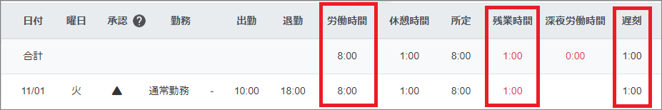
【例】 「遅刻」を労働時間に含めない場合
出勤、退勤ともに1時間遅れると、所定外労働時間は0時間になります。
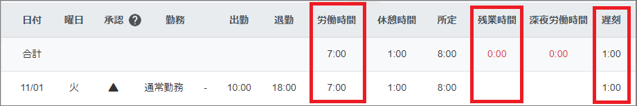
ご注意
「労働時間に含める」の計算は、勤怠を登録した時点で行われます。「労働時間に含める」チェックをつけた設定の時に勤怠を登録し、その後チェックを外したとしても、該当日の労働時間はチェックをつけた時のままとなりますのでご注意ください。
-
休憩時間に含める
中抜けを休憩時間に含めるかどうかを選択します。
【例】 「中抜け」を休憩時間に含めた場合
2時間の中抜けを行うと、休憩時間に2時間加算されます。
また、中抜けの時間は拘束時間に含まれます。
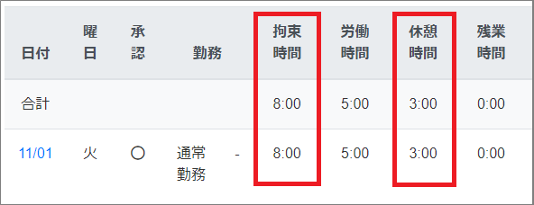
【例】 「中抜け」を休憩時間に含めない場合
時間の中抜けを行っても、休憩時間に加算はされません。
また、中抜けの時間は拘束時間に含まれません。
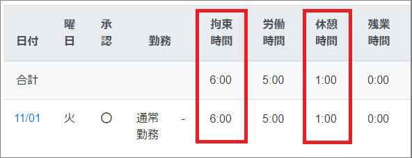
ご注意
「休憩時間に含める」の計算は、勤怠を登録した時点で行われます。「休憩時間に含める」チェックをつけた設定の時に勤怠を登録し、その後チェックを外したとしても、該当日の休憩時間はチェックをつけた時のままとなりますのでご注意ください。
-
法定内・法定外残業計算
法定内残業、法定外残業の計算をするかしないかを選択します。
「使用する」を選択すると、各種画面に「法定内・法定外残業時間」が表示されます。
法定内残業：所定外の勤務時間から、法定外残業を除いた勤務時間
法定外残業：1日8時間超の勤務時間と、1週40時間超の勤務時間
（日ごと、週ごとの勤務時間計算に法定休日出勤は含まない）
※各種画面とは、勤怠実績、勤怠承認、勤務入力訂正、各課有休・残業一覧表、個人別日別勤務報告書、日報データCSV、CSV出力、勤務データ一覧表、各課入力状況一覧を指します。
【例】 法定内・法定外残業計算を「使用する」
画面上に「法定内残業」「法定外残業」の項目が表示されます。
勤怠を登録した際、1日8時間超の勤務と週40時間超の勤務は「法定外残業」、
法定外残業に含まれない所定外労働は「法定内残業」に計上されます。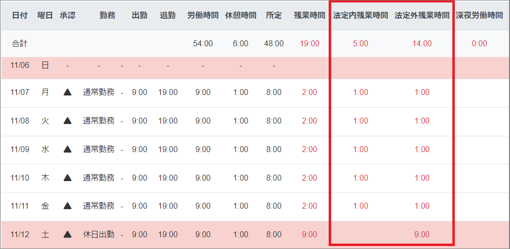
【例】 法定内・法定外残業計算を「使用しない」
画面上に「法定内残業」「法定外残業」の項目が表示されません。
勤怠を登録した際、「法定外残業」「法定内残業」の計上は行われません。
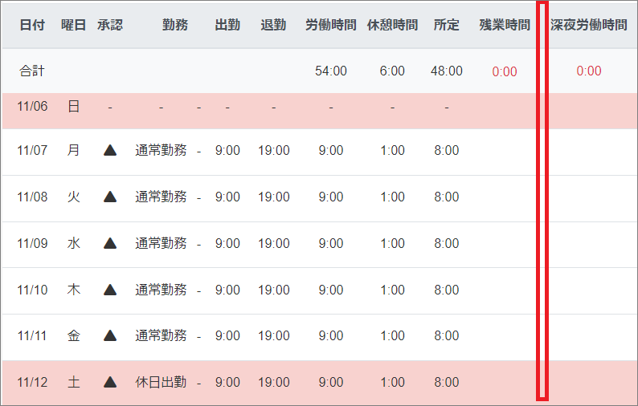
ヒント
打刻丸め区分、時間内分入力区分、時間外分入力区分の設定により、「勤務時間」「休暇区分」の分入力選択肢が変わります。
勤怠修正だけでなく、勤怠承認申請の分入力選択肢もこれに準じます。
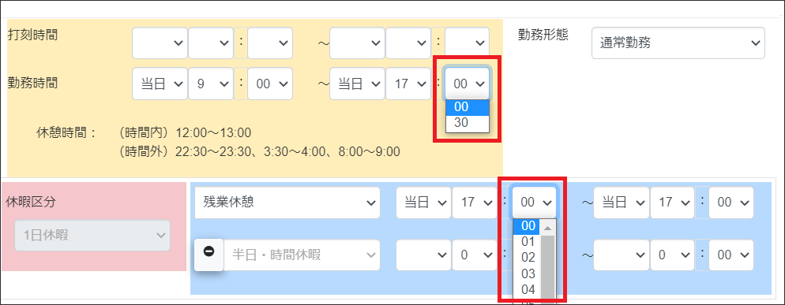
ご注意
③時間内分入力区分および④時間外分入力区分の変更は、必ず確定処理（勤怠の締め作業）後に行ってください。変更前単位で入力した分入力選択肢が変更後に存在しない場合は「00」になるため、勤務時間が不正になります。
【例】変更前が1分単位、変更後が30分単位の場合
出勤8：57～退勤18：58 → 出勤8：00～退勤18：00
ご注意
「法定内・法定外残業時間」の計算は、勤怠を登録した時点で行われます。「法定内・法定外残業時間：使用しない」設定の時に1日9時間の勤怠を登録し、その後「法定内・法定外残業時間：使用する」に変更したとしても、該当日の法定外残業時間は0：00のままとなりますのでご注意ください。
その他画面の表示例
・勤怠承認
使用しない場合は項目ごと非表示
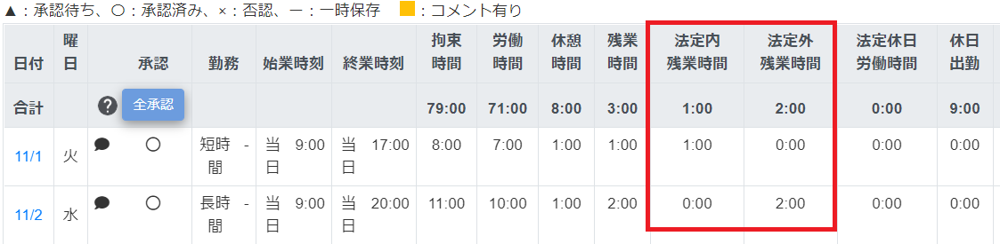
・勤務入力訂正
使用しない場合は項目ごと非表示
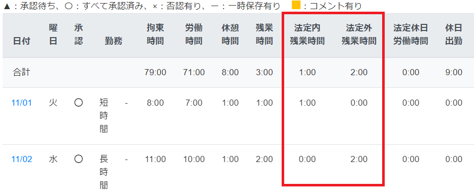
・各課有休・残業一覧表
使用しない場合は項目ごと非表示
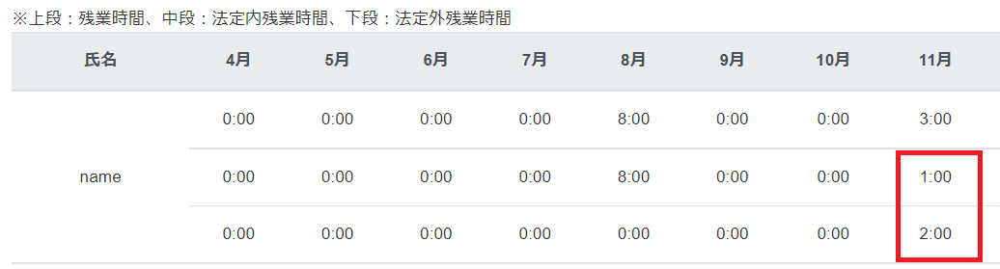
・各課入力状況一覧
使用しない場合は項目ごと非表示
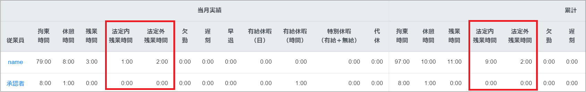
・個人別日別勤務報告書
使用しない場合は項目の中身が「-」表示
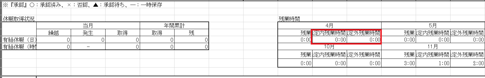
・日報データCSV
使用しない場合は項目ごと非表示
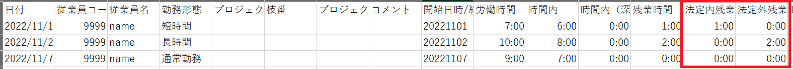
・CSV出力
使用しない場合は項目ごと非表示
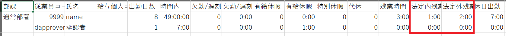
・勤務データ一覧表
使用しない場合は項目の中身が「-」表示
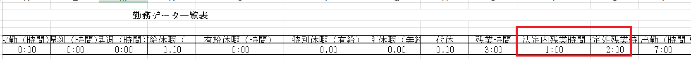
-
-
法定残業集計基準日
法定内・法定外残業計算を使用する場合に、週40時間超の残業集計基準となる曜日を選択します。
基準日を「日曜日」に設定した場合は、日曜日から土曜日までが残業集計期間となります。
-
残業時間に含める
残業時間にどの時間を含めるかを選択します。
計算対象にチェックをつけると、各種画面の残業時間にチェック対象が計上されます。
※各種画面とは、勤怠実績、勤怠承認、勤務入力訂正、各課有休・残業一覧表、各課入力状況一覧、個人別日別勤務報告書、日報データCSV、CSV出力、勤務データ一覧表を指します。
すべてのチェックを外すと、各種画面で「残業時間」の表示列が非表示となります。
時間外労働：所定時間外の労働時間
休日出勤：法定休日ではない休日の労働時間
法定休日出勤：定休日の労働時間
法定内残業：所定時間外の労働のうち、法定外残業に当たらない労働時間
法定外残業：1日8時間超の勤務時間、および1週40時間超の労働時間
※「法定内・法定外残業計算」を使用するに設定していると法定外残業時間も含む
※「法定内・法定外残業計算」を「使用しない」に設定している場合は選択不可
※「法定内・法定外残業計算」を「使用しない」に設定している場合は選択不可
ヒント
残業の二重計上を避けるため、「法定内残業」「法定外残業」と、「時間外労働」「休日出勤」は、どちらか片方しか選択できません。
「法定内残業」や「法定外残業」にチェックをつけたい場合は、先に「時間外労働」と「休日出勤」のチェックを外し、「法定内・法定外残業計算」を使用する設定としてください。
ご注意
「残業に含める」のチェックを変更すると、確定処理済みの過去月の残業時間も変更されます。
【法定内・法定外残業計算】と【残業時間に含める】の設定例
固定労働時間制であり、法律上の「時間外手当あり」の時間のみ集計したい
法定内・法定外残業計算は「使用する」を選択し、法定外残業にチェック
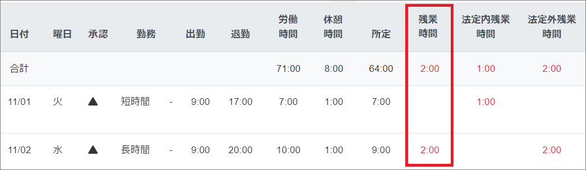
固定労働時間制であり、法律上の「時間外手当あり」の時間に所定外労働時間を加えたい
法定内・法定外残業計算は「使用する」を選択し、法定内残業、法定外残業にチェック
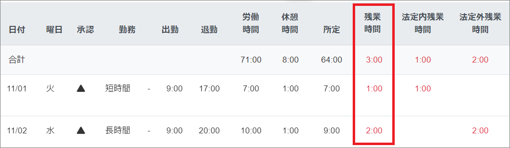
変形労働時間制であり、勤務形態マスタ上の所定外労働時間のみを残業にしたい
法定内・法定外残業計算は「使用しない」を選択し、時間外労働、休日出勤にチェック
※現在の勤怠RECOでは、変形労働時間制を採用した場合の法定内・法定外残業計算へ対応していないため、こちらの設定で対応してください。
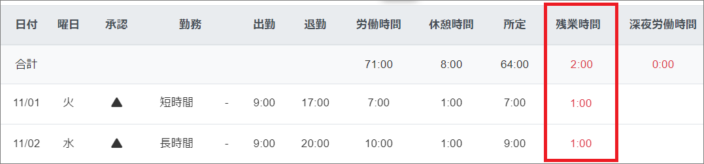
-
承認依頼メール
承認者に勤怠承認依頼メールを通知するかどうかを選択します。「通知する」に設定すると、従業員が勤怠を登録するたびに、承認者宛にメール通知が届きます。日次で承認依頼メールを受け取りたい場合は「通知する」を設定してください。
※共通マスタで「通知する」設定にしても、従業員マスタで「通知しない」設定にした場合は通知されません。
※「固定承認者コード」で設定された承認者がメール通知対象になります。「固定承認者コード」が設定されていない場合は、「初期プロジェクト」の承認者がメール通知対象になります。

-
締日
勤怠の締め日を設定します。月末日締めの場合は、「末日」にチェックを入れます。
※締日を変更すると、以下の画面表示内容やデータの対象期間が過去に遡って変わりますのでご注意ください（メニューによっては、締日単位での表示のみ可能です）。
トップ
勤怠実績
各種出勤簿
勤怠承認申請
工数実績
日報データCSV出力
申請承認、勤怠承認
勤務未入力チェック、勤務未承認チェック
シフト取込、シフト編集、シフト実績出力
各課入力状況一覧
個人別日別勤務報告書
CSV出力
勤務入力訂正
勤務データ一覧表
有休・特別休暇付与
各課有休・残業一覧表、有休取得一覧表
年次有給休暇管理簿
アラートチェック
月別残業時間推移、月別労働時間推移
休暇取得状況
ご注意
運用開始後に締日を変更すると、代休の有効期限や残業超過チェック等、月次で管理している情報が変動します。
また、過去に使用された代休や有休休暇などの有効期限との整合性が取れなくなり、次回打刻時などの勤怠更新時に「代休の残日数がありません。」等のエラーが表示される場合があります。※一番古い休日出勤以前の月度に新たに勤務実績を登録し、即削除する事で、現在の締日に準じて休暇データが更新され、エラーは解消されます。
-
シフト締日
シフトの取り込みやシフト編集時の基準日（締日）を設定します。
【例】 10日と設定した場合
当月11日～翌月10日のシフトが取り込まれます。
月末日締めの場合は、「末日」にチェックを入れます。
-
確定処理日
確定処理（勤怠の締め作業）を行うと、その月の締日が表示されます。
従業員は確定処理日以前の勤怠入力や各種申請等ができなくなります。
-
初期ページ
勤怠RECOログイン時、最初に表示される初期ページを設定します。
パーソナル画面：個人用トップ画面（カレンダー）
出退勤入力：出退勤の打刻画面
-
共通カレンダー
「共通カレンダー」を「使用しない」に設定した場合、従業員マスタに設定するためのカレンダーを「カレンダーマスタ」で作成する必要があります。
「共通カレンダー」を「使用する」に設定した場合、カレンダーマスタを作成する必要はありません。従業員マスタには土曜日・祝日が休日、日曜が法定休日の「全社共通カレンダー」が設定されます。
定休日が水曜日であるなど、自社独自のカレンダーを使用したい場合は、共通カレンダーを「使用しない」に設定してください。
-
デフォルトシフトテンプレート
勤怠RECO上に設定されているデフォルトシフトテンプレートを使用するかしないかを選択します。「使用しない」に設定した場合は、シフトテンプレートマスタで自社独自のテンプレートを登録できますが、デフォルトテンプレートも利用することができます。
ヒント
シフトテンプレートは、［シフト取込］で月ごとのシフトを取込む際に使用します。
［シフト取込］画面で年月を指定し、デフォルトテンプレートをダウンロードすると、その月の全日付、およびシフト制の全従業員があらかじめ入力されたテンプレートを取得できます。月ごとのテンプレートを作成する手間を省けますので、デフォルトテンプレートのご利用を推奨します。
-
申請機能
有休の取得申請や、残業申請などの「申請承認機能」を使用するかしないかを選択します。使用するためには、部課マスタ・役職マスタ・承認経路マスタの登録が必須になります。
この「申請機能」と、㉒の「勤怠修正申請」のどちらかを使用する設定にすると、
一般権限アカウントと管理用権限アカウントの［個人用］画面に、［勤怠承認申請］メニューが表示されます。
管理者用アカウントの［管理用］画面に、［申請承認］メニューが表示されます。
ご注意
月度の途中で申請機能を「使用する」に変更する場合は、前月度の勤怠締め処理を完了してからにしてください。
-
勤怠更新
「申請機能」を「使用する」にした場合に選択が必要です。
「使用する」を選択した場合、申請が承認されると、申請した内容（残業申請、年次有給休暇申請、休日出勤申請等）が勤務データに反映されます。
「使用しない」を選択した場合、申請が承認されても、申請した内容は勤務データに反映されません。各従業員が［勤怠実績］画面より、勤怠実績を修正する必要があります。
「申請機能」と「勤怠更新」を使用する/しないの選択の組み合わせによって、勤務承認申請内容の勤務データへの反映有無が変わります。下表で確認してください。
申請機能
勤怠更新
勤務データ
勤怠実績登録時のアラート
1
使用する
使用する
勤怠承認申請の内容が反映される
残業や有休申請を行っていないとアラートが表示される
2
使用する
使用しない
勤怠承認申請の内容は反映されない
残業や有休申請を行っていなくても登録ができる
3
使用しない
選択不可
適用なし
残業や有休申請を行っていなくても登録ができる
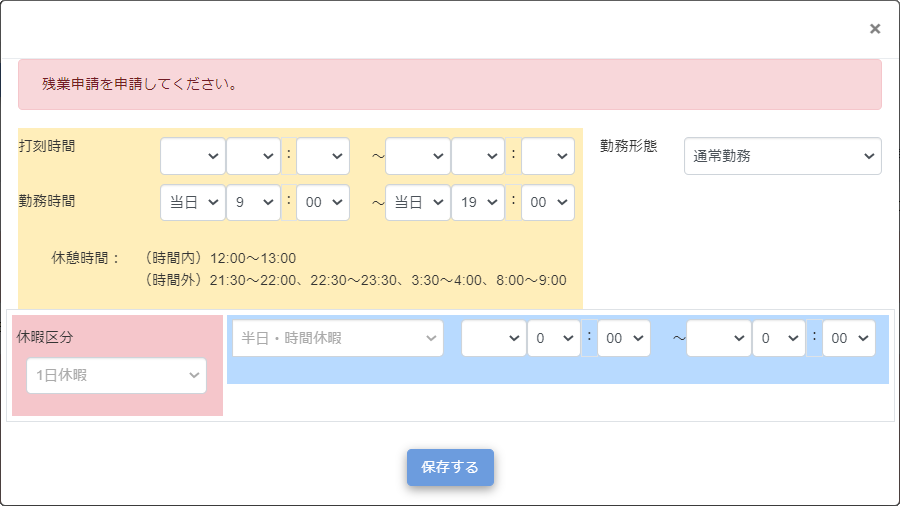
ご注意
「勤怠更新」を使用しないに設定した場合、出勤打刻を行わないと、「外出」「戻り」「退勤」の打刻ができません。
-
勤怠修正申請
打刻忘れや打刻訂正などを修正する「勤怠修正申請」を使用するかしないかを選択します。使用するためには、部課マスタ・役職マスタ・承認経路マスタの登録が必須になります。
この「勤怠修正申請」を使用する設定にすると、
一般権限アカウントと管理用権限アカウントの［勤怠実績］画面に、「勤怠修正」が表示されず「勤怠確認」が表示されます。
一般権限アカウントと管理用権限アカウントの［勤怠承認申請］画面に、「勤怠修正申請」の選択肢が表示されます。
-
お知らせ
勤怠RECOのトップ画面に共通して表示するメッセージを設定します（最大100文字）。
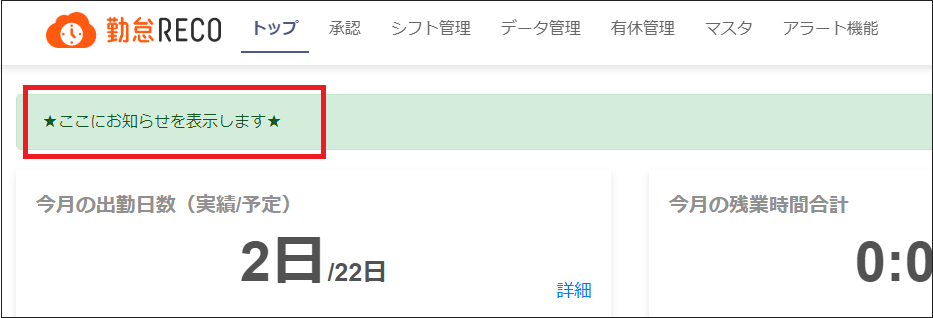
-
開始日、終了日
「お知らせ」を勤怠RECOのトップ画面に表示する期間の初日と最終日をカレンダーから選択します。
開始日と終了日を設定すると、表示期間を指定できます。開始日が空欄の場合は、「共通マスタ」を更新すると即時に勤怠RECOのトップ画面にお知らせが表示されます。終了日が空欄の場合は、勤怠RECOのトップ画面にお知らせが表示され続けます。
-
給与情報管理区分
給与システムと連携するかを設定します。
「管理する」に設定すると、従業員マスタの入力画面に「給与連動システム」の項目が表示されます。
-
給与連携時の勤務時間表記
「CSV出力」および「給与連携ソフトCSV出力」画面における「勤務時間表記」の初期値を設定します。
給与システムとの連携
［更新する］ボタンをクリックする
画面上部に「更新が完了しました。」とメッセージが表示され、入力したすべての共通マスタ情報がマスタデータに登録されます。